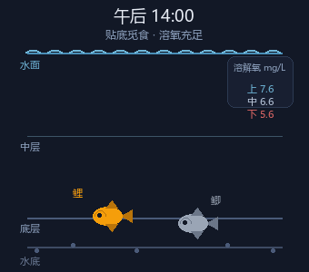
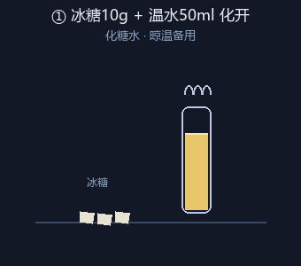

📡 鱼情判断已按 实时气压 / 湿度 / 风力 / 水温 动态调整，直连气象数据，每 15 分钟自动刷新
🎯 今日出钓指数（气压·湿度·温差·风力·溶氧·节气）
--
④ 贾鲁河三层溶解氧（模型估算，非实测）
--
估算依据：水温↔饱和溶解氧物理关系；上层=饱和值92-97%，中层=78-85%，下层=64-74%。凌晨3-4点接近全天最低，下层可能跌破地表水Ⅲ类下限5mg/L。
⑤ 鲤鲫水层（当前 + 提前2小时预测）
鲤鱼（对缺氧更敏感，先上浮）鲫鱼（耐低氧更强，上浮更晚）
鱼层位置 = 时段基线 + 气压/湿度/下层溶氧综合修正；图上文字（鲤·X层/鲫·X层）与判定结论同源一致（0=水面，1=水底）· 示意
📽️ 鱼情水层全天变化（动图）

📽️ 开饵五步演示（动图）

🔁 点上方任意方案切换配方；乳猪饲料/螺鲤需先温水泡开再拌。